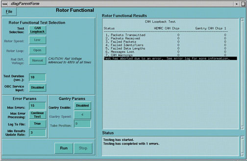

Proprietary to General Electric
Direction 5114043-800, Rev# 9
LightSpeed 3.X Service Methods (Advanced)
Proprietary to General Electric |
[SERVICE DESKTOP] -> [DIAGNOSTICS] -> [X-RAY GENERATION] -> [CAN LOOPBACK]
Illustration 1: Rotor Functional Screen

This diagnostic test loops back the HCAN serial line with the GCAN serial line. The purpose of this test is to validate the HEMRC Control Board CAN networks.
Run test when HCAN communications errors are reported to the user.
HCAN communications operate intermittently.
Look for the number of failures detected. If the test passed with little or no errors, HEMRC control board is good. Check for bad connections, incorrect wiring, or failed HEMRC drive.
HCAN communication errors are frequently due to a blown fuse on the HEMRC I/F board.
Check the neon light on the back of the HEMRC drive for a power indication.
The green HRX LED indicates the presence of CAN communications and 12V isolated power.
HCAN drivers are powered by the HEMRC drive.
Future software releases will indicate a 12V isolated power failure from a HCAN failure.
Jumper on HEMRC control board must be moved to perform this test.
HEMRC drive isolated power must be present for this test to pass.